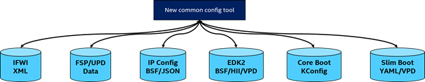
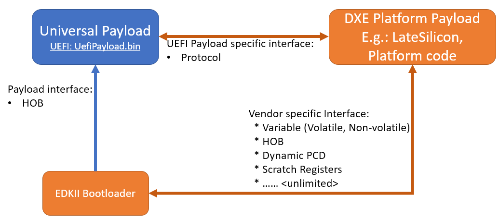

3. Platform Orchestration Layer (POL)¶
3.1. Introduction¶
The Platform Orchestration Layer (POL) is aimed to provide guidelines on writing platform code that leverage a Scalable Intel Firmware Support Package (sFSP) interface and payload to coordinate the overall platform initialization flow.
3.1.1. Motivation for POL¶
Following the Next Generation Firmware initiative, the Intel system firmware (BIOS) is evolving to be a multilayer, modular, scalable FW solution which fulfills all the modern FW requirements in a super complex HW IP centric world. The layers are shown in Figure 1.
The Platform Orchestration Layer sits between the SOC Abstraction Layer (SAL), as abstracted by the Scalable FSP interface, and the Payload Layer. The Platform Orchestration Layer coordinates the board-specific boot sequence, invoking the sFSP interfaces for any silicon specific work, and produces the interface to launch the payload environment along with industry standard tables that are an amalgam of silicon and platform, such as SMBIOS and ACPI.

Figure 2 Layers of Universal Scalable Firmware
Therefore, the missions of POL layer are:
- Initialize the board by programming board specific resources and invoking the sFSP for SOC and/or XPU specific resources
- Invoke payloads for OS boot environment and possible XPU and runtime.
3.1.2. POL Design Principles¶
POL is considered as the layer for platform code. It plays a major role in providing vendor specific features and mainboard-specific initialization, as distinct from the sFSP that is scoped to be SOC-specific. The POL will be the vehicle to convey policy into the sFSP, interact with the sFSP for initialization, and retrieve state information from the sFSP. The architectural design of a POL shall follow the below principles:
- Compatibility - POL shall be compliant with FSP Specification and provide the configuration information into the sFSP and retrieve resultant output information from the sFSP.
- Portability – POL will attempt to be as SOC independent as possible and allow for source level compatibility between different open source platform code frameworks such as EDKII, coreboot, oreboot, and U-Boot. The OS boot specific code is abstracted via payloads.
- Determinism/Simplicity – POL should abstract SOC initialization through sFSP interfaces and have a simple boot flow.
3.1.3. Audience / Document scope¶
The audience for this document is BIOS/system firmware architects and developers that design or implement or consume Intel silicon initialization code. The document is intended to describe the architecture directions and requirements.
3.1.4. Terminology¶
Table 1: Terminology
| Term | Definition |
|---|---|
| Config | Abstracted configuration information |
| Payload | OS boot container |
| sFSP | SOC initialization |
3.1.5. Reference documents¶
The following documents are referenced in this specification.
Table 2: Reference Documents
3.2. Architecture¶
The following section describes the architecture of the POL.
3.2.1. POL Overview¶
Following the guiding principles in chapter 1.2, the high-level architecture of POL is shown in Figure 2. POL interfaces with the sFSP API specification, e.g. the 6 APIs and HOB/UPD defined in FSP 2.2 spec. On the other end, POL interfaces with the universal payload. It should invoke the payload API after providing board initialization.
Within the POL, it has several stages:
- POL early initialization
- Maps to
- coreboot romstage
- EDKII SEC/PEI
- Slim bootloader stage 1
- Maps to
- POL late initialization
- Maps to
- Coreboot ramstage
- Slim bootloader stage 2
- EDKII DXE
- Maps to
- POL runtime
- OEM SMM

Figure 3 POL High Level Architecture
Another aspect of the POL is to allow for maximum platform code re-use across different SOC generations.

Figure 4 POL re-use
Beyond re-use of platform code with different SOC’s, the POL should be re-useable across the most used or popular boot paradigms such as a full UEFI boot, LinuxBoot, VaultBoot or an embedded hypervisor.

Figure 5 Different Payloads
The Universal Payload provides the right hand side interface. There could be additional payloads, such as an XPU initialization payload or a validation payload, such as FSP-V. But in either case the POL implementation should be largely independent of the SOC and the payload.
Finally, UFS allows for a world where there are various compositions of the firmware stack. This can include RUST-based firmware as either a payload or the platform layer implementation, as described in the figure below:

Figure 6 Modern language-based usage
This architecture is based upon https://github.com/jyao1/rust-firmware.
The rust API for FSP wrapper is at https://github.com/jyao1/rust-firmware/tree/master/rust-fsp-wrapper.
3.3. Configuration Introduction¶
The Platform Orchestration Layer (POL) is aimed to provide guidelines on writing platform code that leverage a Scalable Intel Firmware Support Package (sFSP) interface and payload to coordinate the overall platform initialization flow. It needs to expose configuration, as do the layers below.
To that end, YAML, which is a variant of JSON that allows for embedding comments, is employed in order to have a consistent language across various codebase configuration efforts.
3.3.1. Platform configuration¶
Goals of the Configuration Efforts
- Normalize how configuration is done across various codebases and firmware domains (e.g. FSP, Boot Firmware, other on-board devices).
- Deliver a unified API-based FW programming model across bootloaders for all Intel platforms, XPUs/SOCs, and IPs.
- Make adoption by stakeholders/partners as pain-free as possible.
- Prepare internal stakeholders, ecosystem partners, and customers to take advantage of the transition to a common configuration paradigm.
Why do this?

- Intel has stakeholders and customers with investments in a variety of codebases, each of which have different underlying methods for firmware configuration.
- This makes it difficult to have a consistent user/developer experience when configuring platforms based on various underlying firmware technologies. This is a problem for both internal stakeholders and Intel customers.
New common config tool diagram
Tasks associated with the effort
Create a unified approach to configuring a platform regardless of the underlying codebase without requiring the product group to change what they’re doing in any significant way. Low touch/Enable via tools.
- Assume no significant changes needed in the native codebase to support this solution.
- Use YAML to express configuration data
- Gap analysis between the various config methodologies
- XML–>YAML, BSF–>YAML, VPD/HII/etc –> YAML
- Create build-time tools to import codebase config data, modify it, and export it back into its native form.
- This is especially important and useful when some codebases have config data scattered in many places, thus increasing the usability for developers in configuring the defaults of the codebase.
- Runtime config
- Scripting in runtime may be needed for manufacturing line usage etc – something to consider.
- Telemetry?
- Address how we expose necessary data from the machine.
- Port ESRT content into an ACPI context.
- More easily enable firmware updates without an underlying UEFI infrastructure/assumption.
Although the POL strives to be SOC independent, the system board’s SOC, with its respective sFSP, and the usage of payloads, may require different configuration. To that end, a consistent set of YAML based configuration will be exposed to the system board builder and platform user to configure the various elements.
3.3.1.1. YAML based settings¶
Although the POL strives to be SOC independent, the system board’s SOC, with its respective sFSP, and the usage of payloads, may require different configuration. To that end, a consistent set of YAML based configuration will be exposed to the system board builder and platform user to configure the various elements.
YAML based configuration will be provided to abstract all of the platform configurable elements
- sFSP UPD
- Platform configuration
- PCD/VFR for EDKII
- KConfig for coreboot/oreboot/u-boot
- DSC for slim bootloader
- YAML native for XPU payload
3.3.1.2. Example configuration¶
An example of an often configurable object for the platform developer is GPIO.
An example of GPIO configuration is as follows:
- $ACTION :
page : GIO
- GPIO_CFG_DATA :
- !expand { CFGHDR_TMPL : [ GPIO_CFG_DATA, 0x400, 1, 0 ] }
- GPIO_CFG_HDR :
- GpioHeaderSize :
length : 0x01
value : _LENGTH_GPIO_CFG_HDR_
- GpioBaseTableId :
length : 0x01
value : 0xFF
- GpioItemSize :
length : 0x02
value : 8
- GpioItemCount :
length : 0x02
value : (_LENGTH_GPIO_CFG_DATA_ - _LENGTH_GPIO_CFG_HDR_ - 8) / 8
# Bit start offset within each GPIO entry array to identify a GPIO pin uniquely. EX: GPIO group id + pad id
# Offset is 2nd DWORD BIT16 = 1 * 32 + 16 = 48
- GpioItemIdBitOff :
length : 0x01
value : 48
# Bit length within each GPIO entry array to identify a GPIO pin uniquely.
# Length is 2nd DWORD BIT16 to BIT28 = 13
- GpioItemIdBitLen :
length : 0x01
value : 13
# Bit offset within each GPIO entry array to indicate SKIP a GPIO programming
# Offset is 2nd DWORD BIT31 = 63
- GpioItemValidBitOff :
length : 0x01
value : 63
- GpioItemUnused :
length : 0x01
value : 0
# Need 1 bit per GPIO. So this mask byte length needs to be at least (GpioNumber + 7) / 8
# Padding can be added to let the whole length aligned at DWORD boundary
- GpioBaseTableBitMask :
length : 38
value : {0}
- GpioTableData :
length : 0
value : 0
3.3.2. 1.1.1 Example implementation¶
An example of implementation in EDKII is Intel Seamless Board Configuration (SBC). This feature provides a standardized and centralized interface for various board HW configuration, including GPIO, PCIe Clock, USB OC, DRAM, I2C, etc. The interface currently is leveraging Structured PCD in VPD which allows both manually and tool assisted modification for different HW setting in EDK2 Platform Payload.
SBC also supports multiple board configuration scenario with board identifier mapped to SkuId in EDKII PCD.

Figure 6 Board configuration
Example implementation with Structured PCD:
gBoardModuleTokenSpaceGuid.VpdPcdBoardGpioTable|*|{CODE({
{0x0} // terminator
})}
Components in EDKII Bootloader will consume these HW configuration while the configuration data is already selected based on SkuId during POST. Then these setting will be applied into silicon or board HW via sFSP. Necessary information will also be wrapped and passed to OS, such as GPIO related setting in ACPI Table.
3.3.4. Advanced feature details¶
The low-level design and implementation of Advanced feature may vary based on boot loaders and other preferences.
The EDKII Min Platform boot loader follows a rich set of design guidelines conforming EDKII software framework and UEFI specification.
Examples of construction of a Min Platform can be found at https://github.com/tianocore/edk2-platforms/blob/master/Platform/Intel/MinPlatformPkg/Docs/A_Tour_Beyond_BIOS_Open_Source_IA_Firmware_Platform_Design_Guide_in_EFI_Developer_Kit_II%20-%20V2.pdf
3.3.5. Interface definitions¶
3.4. XPU considerations¶
One of the goals of the USF effort is to help support all classes of silicon , namely XPU’s. An XPU can be a CPU, such as the SOC based upon Intel Core, Intel Atom, RISC-V or ARM. In addition, the XPU can include integrated or discrete graphics (iGFX/dGFX), FPGA, AI, networking, or acceleration.
To that end, there are various aspects of the XPU support.
These include configuration, update, monitoring, and access, both during the pre-OS and at OS runtime. In the future the latter may move into level 0, but for now the USF shall treat these.
Like other aspects of USF, XPU considerations are in the POL specification since the platform is where all of the system components come together.
3.4.1. Configuration¶
To configure the XPU, a canonical YAML based configuration file will be provided.
3.4.1.1. Build time¶
3.4.2. Initialization¶
Initialization can include having the XPU as part of the sFSP, a dedicated payload, a UEFI or legacy BIOS option ROM, or some open source POL portable library.
3.4.2.1. Open source portable initialization code¶
3.4.2.2. Dedicated payload¶
3.4.2.3. Option ROM (e.g., dGFX or networking HBA)¶
3.4.2.4. sFSP element (e.g., iGFX in Core CPUs)¶
3.4.3. Update¶
It is critical to support both the factory time integration of the XPU support into the IFWI and/or post ship update of XPU support code.
3.4.3.1. Slim bootloader update payload¶
3.4.3.1.1. Overview¶
SBL embedded a built-in Firmware Update (FWU) payload to perform a secure and power fail-safe firmware update flow. It contains redundant boot partitions and depends on hardware assisted boot partition switch to support fail-safe update.
SBL provides abstracted ACPI/WMI interface to trigger FWU flow, EDK2 similar capsule update mechanism to pass the new firmware to bootloader, and EDK2 similar way to report the FWU status back to OS through ACPI table.
3.4.3.1.2. Firmware Update Flow¶
SBL firmware update flow utilizes redundant boot partition to perform firmware update in a reliable way. It involves the following high-level steps:
- Boot from Partition A
- Update Partition B
- Activate Partition B
- Reboot
- Boot from Partition B
- Update Partition A
- Activate Partition A
- Reboot
- Report Firmware Update status
- Terminate firmware update flow.
- Reset system to continue booting to operating system.
Below is a detailed FWU flow chart for SBL.

Figure 7
- Firmware Update capsule is copied to designated location. This location is configurable through SBL configuration options.
- Firmware update is triggered from SBL shell or from Operating system and followed by a system reset.
- SBL detects firmware update signal and sets platform into firmware update mode.
- SBL identifies firmware update mode and loads firmware update payload to start update flow.
- Firmware Update payload gathers capsule image from selected media and verifies capsule data. If successful, continues with firmware update.
- Firmware update payload initializes state machine and identifies the update images in the capsule.
- FWU payload loops through and updates each firmware identified in the capsule image.
- FWU records update status after each firmware update.
- If the firmware is requesting reset after update, reset the system to continue updating other firmware in the capsule.
- In case of a power failure, FWU payload will use the state machine stored in flash to resume from the interrupted state.
3.4.3.1.3. Firmware Update Triggering¶
SBL provides a platform independent abstracted way of triggering firmware update from operating system through ACPI or WMI interfaces.
SBL provides common ACPI methods, DWMI.WQ00 for read and DWMI.WS00 for write to a platform specific chipset register that can survive a reset to signal firmware update. This ACPI method can be called by driver or application to request triggering a firmware update. On the following reboot flow, once the firmware update signal is detected, this signal will be stored into flash so that the following firmware update flow can resume in case of a power failure in the middle of the process.
For OS that supports WMI, such as Windows, SBL further exposes AcpiFirmwareCommunication WMI service through ACPI table to allow triggering firmware updates directly using WMI from applications.
3.4.3.1.4. Firmware Update Status¶
SBL reports firmware update status through custom defined Firmware Update status (FWST) ACPI table. FWST ACPI table will be available as part of RSDT and can be identified with a table signature “FWST”. FWST ACPI table makes use of EFI_SYSTEM_RESOURCE_TABLE defined in UEFI specification to report firmware update status. It adds additional ACPI header on top of it to make it conform to ACPI speciation. OS can use this ACPI table to retrieve the previous firmware update information.
3.4.3.2. UEFI capsule update¶
3.4.3.3. AB update of payload for coreboot¶
3.5. POL examples¶
This chapter gives a reference implementation of POL under EDKII framework. Below shows the code layout that POL has a dedicated package to hold all POL related code.
3.5.1. Slim bootloader¶
Slim Bootloader (SBL) is a flexible, lightweight, and open-source reference boot loader solution designed for Intel platforms. SBL is architected with a modular approach by providing very basic hardware initialization in bootloader, then launching a payload to boot to final OS or application. The payload is flexible and can be at user’s choice to meet special needs. The SBL overall architecture is shown in the diagram below:

Figure 8: SBL Architecture
SBL takes a linear staged boot approach to initialize the platform. As illustrated in the diagram below, in each stage, SBL utilizes Intel® FSP API interfaces to initialize the silicon and utilizes static library interfaces to initialize the board.

Figure 9: SBL Linear Staged Boot Approach
These static library interfaces are aligned with EDK2 base library implementation to the abstract board initialization API. For examples, see Figure 9 above and GPIO initialization, ACPI initialization, etc.
The detailed SBL stages are listed in the table below:
| Stage | Description |
|---|---|
| Stage 1A | Stage 1A contains reset vector and is first stage to gain control. It is responsible for very basic platform execution environment initialization to enable following stage execution. It includes temporary memory, debug port, etc. |
| Stage 1B | Stage 1B is the “pre-memory” stage and is responsible for loading configuration data and initialization system main memory. After memory is available, it will load and verify Stage2 for execution. |
| Stage 2 | Stage 2 is the “post-memory” stage and is responsible for all initialization the remaining platform, including chipset, CPU, I/O, ACPI, PCI, etc. |
| Payload | Payload is the bridge between bootloader and the OS. It provides standard boot device initialize to further load, verify and launch OS images. It also performs specific actions, such as firmware update. |
As stated above, SBL utilizes static library class to abstract the API interfaces for platform initialization. These libraries are written in pure C language so that it can easily be shared between different boot solutions. For example, many base library instances in EDK2 MdePkg are directly leveraged by SBL. Many other libraries, such as SoC access libraries, feature libraries are also ported from corresponding EDK2 libraries through removing UEFI specific dependencies. In addition, ACPI ASL files are also borrowed from EDK2 directly. These sharable libraries and files make it easier to quickly enable a platform using the boot solution at user’s choice.

3.5.2. u-boot¶
U-Boot can be fabricated as a POL or a payload.
3.5.3. Oreboot¶
Oreboot is a RUST-based POL example
3.5.4. coreboot¶
coreboot is a POL example
3.5.5. EDKII¶
EDKII can also be used to create a payload, such as https://github.com/tianocore/edk2/tree/master/UefiPayloadPkg.
3.5.5.1. Components¶
Components in EDKII based firmware can be separated into three categories:
- EDKII Bootloader
- UEFI Universal Payload
- EDKII UEFI Platform Payload (Optional)

Figure 10
The system boot starts from EDKII Bootloader where the FSP is invoked to initialize the silicon. Then the Bootloader follows the Payload specification to load and start UEFI Universal Payload. It may pass additional FV location information to UEFI Universal Payload which tells the optional EDKII UEFI Platform Payload.
EDKII Bootloader consists of reset vector code, necessary platform specific code and EDKII generic code that launches FSP. In the end of EDKII Bootloader, it transfers the control from EDKII Bootloader to UEFI Universal Payload through DxeIpl PEIM. Each platform vendor develops its EDKII Bootloader and the implementations for different platforms are different.
UEFI Universal Payload consists of all the platform agnostic drivers that prepare the UEFI OS booting environment. For example, the RTC driver to support UEFI time services, the MTC driver to support the UEFI Monotonic Counter services. The “Universal” in the name stands for the goal that the same payload binary can be used by different bootloaders and different platforms. There is only one implementation instance of the UEFI Universal Payload. For example, Slim bootloader and EDKII Bootloader can boot to UEFI OS by using the same UEFI Universal Payload. All the SOC and platform specific information is abstracted in EDKII Bootloader and passed to UEFI Universal Payload. The abstraction format is defined by Payload specification.
EDKII UEFI Platform Payload is an optional component. It consists of platform specific implementations:

that must be done in payload phase.
Theoretically this component can be eliminated by moving all implementations to EDKII Bootloader.
Figure 11
3.5.5.2. Data Flow¶
EDKII Bootloader passes SOC and platform information through HOBs to UEFI Universal Payload. UEFI Universal Payload interacts with EDKII UEFI Platform Payload through Protocols. EDKII Bootloader can use any mechanism to pass information to EDKII UEFI Platform Payload since both are owned by the platform vendor.
{kind=link}
Figure 12: Universal Payload, UEFI Platform Payload, and EDKII Bootloader